Одеса — це усміхнене, морське серце України, яке заворожує колоритом, вільним духом та неповторним гумором. Вона закохує в себе архітектурою Французького бульвару, величчю Оперного театру, затишними двориками з висіченими білизняними мотузками та нескінченним шумом Чорного моря. Це місто-свято, де солоне морське повітря змішується з ароматом квітучої акації, створюючи особливу, ні з чим не порівнянну атмосферу.
Визначні пам'ятки Одеси — це яскравий сплав морської величі, вишуканої європейської архітектури та неповторного міського колориту.
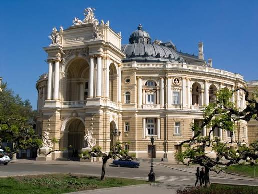
Одеський національний академичний театр опери та балету — справжній архітектурний шедевр у стилі віденського бароко та неоренесансу з розкішною акустикою та багатим внутрішнім оздобленням.
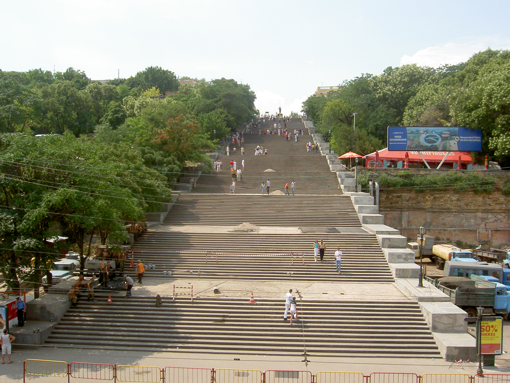
Потьомкінські сходи — всесвітньо відомі 192 сходинки, що слугують парадним входом до міста з боку моря та створюють унікальну оптичну ілюзію.
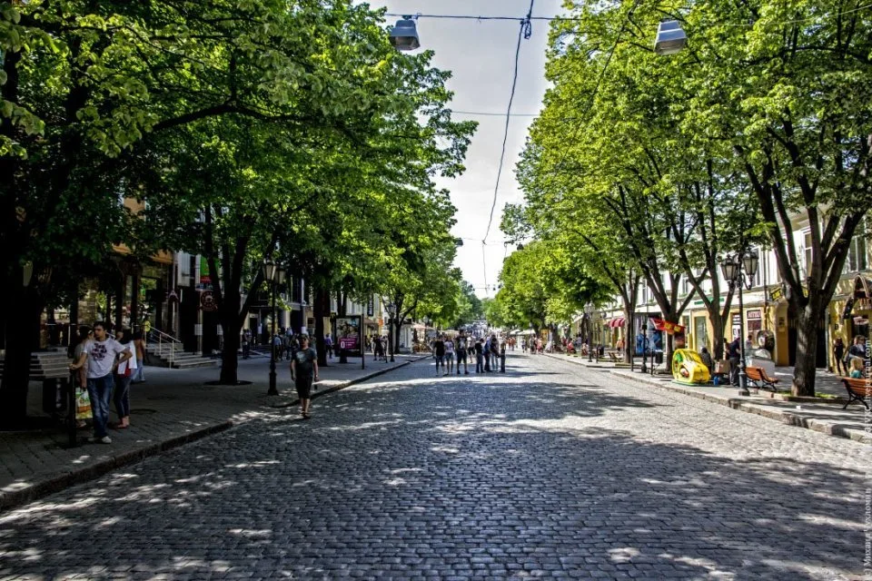
Вулиця Дерибасівська та Міський сад — пішохідне серце Одеси, де панує атмосфера свята, розташований затишний Пасаж із скляним дахом та безліч кафе.
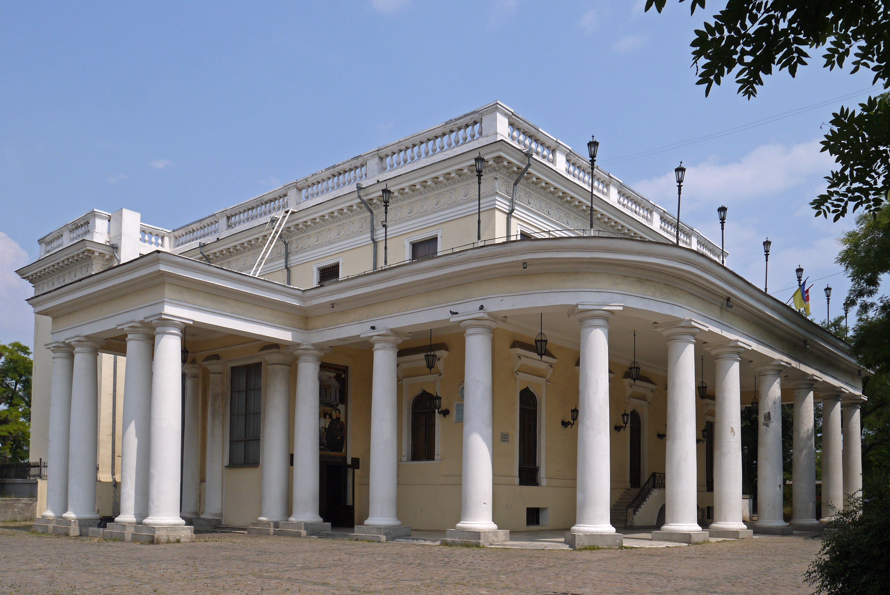
Воронцовський палац та Маяк — величний комплекс на мисі біля входу в порт, а Одеський маяк є одним із найголовніших символів морської столиці.
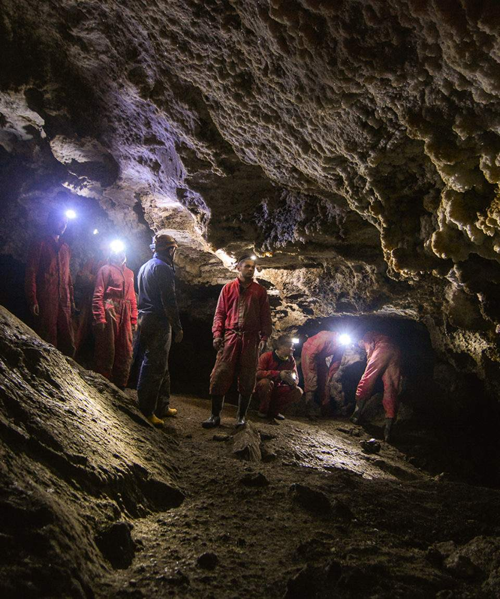
Одеські катакомби — один із найдовших у світі підземних лабіринтів завдовжки понад 2,5 тисячі кілометрів із багатою історією від видобутку ракушняку до партизанського руху.
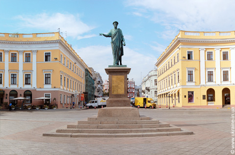
Приморський бульвар та Пам'ятник Дюку де Рішельє — мальовнича платанова алея з видом на порт та бронзовою статуєю засновника міста, який «зустрічає» гостей Одеси.
Кухня та гастрономія Одеси — це унікальний смаковий коктейль, замішаний на морських традиціях, єврейській колоритності, грецькому, молдовському та болгарському впливах.
Форшмак — класична одеська закуска з дрібно рубаного слабосоленого оселедця, яблука, цибулі та вершкового масла, яку подають із підсмаженим чорним хлібом.
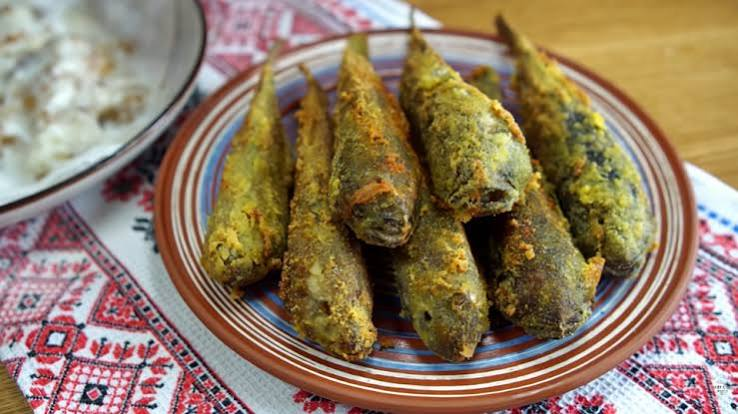
Смажені бички та цаца — головні морські делікатеси: свіжовиловлені чорноморські бички чи дрібна рибка цаца, обсмажені в хрусткій скоринці до золотавого кольору.
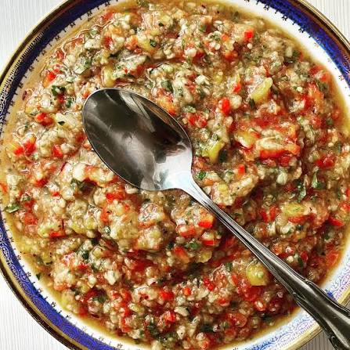
Ікра із запечених синіх баклажанів — духмяна страва з запечених на вогні баклажанів, соковитих томатів, часнику та запашної олії, яку готують виключно вручну без металевих ножів.
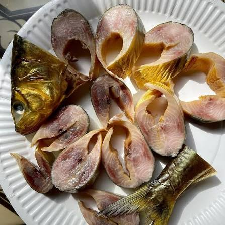
Дунайка (дунайський оселедець) — легендарний жирний оселедець особливого посолу, який ловлять у гирлі Дунаю лише кілька місяців на рік.
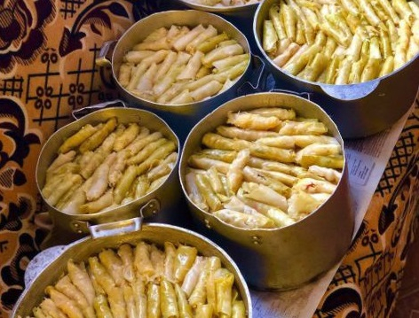
Голубці «з мізинчик» — витончені ювелірні голубці крихітного розміру у виноградному або капустяному листі, що вважаються показником майстерності господині.
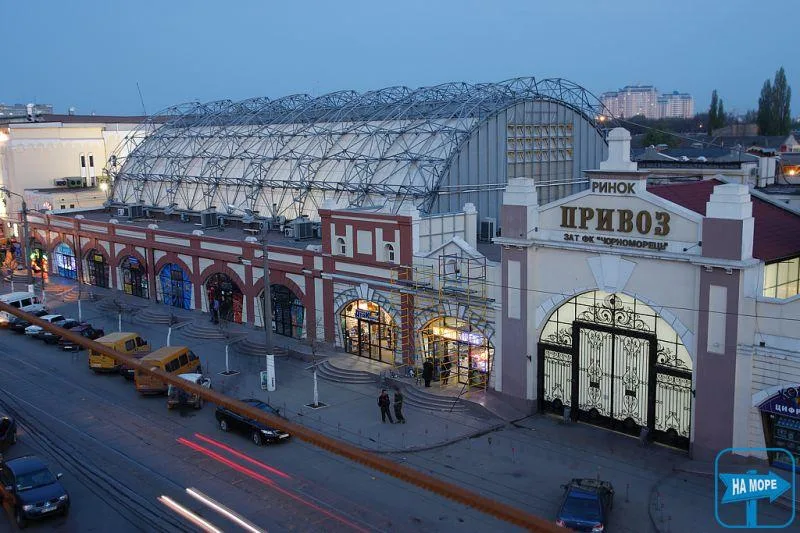
Привоз та дворики — гастрономічна культура Одеси нерозривно пов'язана з легендарним ринком «Привоз», де перед покупкою обов'язково треба все скуштувати, поторгуватися та послухати свіжі міські новини.
Культура та традиції Одеси — це унікальний сплав морської свободи, міжкультурного співіснування та легендарного самобутнього гумору. Місто виплекало власну мовну говірку, особливе ставлення до життя та традицію святкування Гуморини — щорічного свята сміху. Тут надзвичайно цінують сусідські взаємини, які формувалися в знаменитих одеських двориках із білизняними мотузками та спільними вечірніми застоллями, а також пошану до моря, що пронизує кожну родину — від династій моряків до місцевих рибалок.
Ви тільки уявіть собі цей момент: ви повертаєте з Дерибасівської в один із затишних одеських двориків під розлогими платанами, де крізь ковані ворота чути дзюркотіння старого фонтану та шум морського вітру. Краса Одеси — вона легка, солона, просякнута сонцем і легким передчуттям свята. Вранці це місто загорнуте у ніжний морський туман, крізь який м'яко виринає стрункий силует Оперного театру, а золоті промені сонця відбиваються у вікнах Пасажу та роблять морську гладінь схожою на розплавлене срібло. А ввечері, коли на Приморському бульварі спалахують тисячі гірлянд, а з боку порту доноситься глухий гудок теплохода, Одеса перетворюється на романтичну морську казку — з ароматом квітучої акації, шепотом хвиль і неповторним духом свободи, у який закохуєшся назавжди.